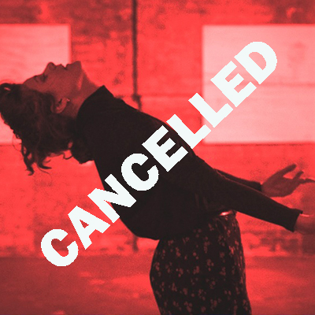

EVENT CANCELLED!!!
Performance Night / Double Bill
The Sacred Hour + S(H)EL(L)FISH
The Sacred Hour
Visiting the exhibition Ferdinand Hodler und die Berliner Moderne at the Berlinische Galerie in 2021, choreographer and dancer Lore Dekeyser was moved by the mysterious power and
vulnerability of the four women in Hodler’s symbolist painting Die Heilige Stunde. Following her desire to get the four women moving out of their sacred postures, she invited three dancers and developed The Sacred Hour, a movement-based exploration of femininity
on the 3rd symhony of Johannes Brahms. In Hectolitre a more intimate version of the performance will be shown with only two dancers.
Concept & Choreography: Lore Dekeyser
Dance: Magda Negowska & Lore Dekeyser
Developed together with: Greta Schuster & Yen Lee
With the support of Tanzfabrik Berlin, k77 Raum für Tanz und Bewegung, Culterim Gallery Berlin.
Music: Symphony No. 3 in F Major, Op 90: III. Poco allegretto by Johannes Brahms
-
Saturday, 28th of September 2024
from 19:00h to 22:00h
@ Rue de l'Hectolitre 3, Reactor
Tickets pay cash at the entrance
Sliding scale 5-15 eur
-
PROGRAM
Timeline
Doors: 18.00
Performance 1 start: 19.00
Short break: 19:30
Performance 2 start: 19:45
Preliminary end: 20:15
S(H)EL(L)FISH
S(h)el(l)fish is a work in progress. A blend of neo-classical piano chords, eruptive dance moves and (dis)comforting story telling. An immersive experience into the disruptive world of one electric performer, one dancing piano and one musical dancefloor.
Choreography, dance, composition, piano, text: Lore Dekeyser
Bio
Lore Dekeyser is a Belgian choreographer, dancer, musician and composer who has been living and working in Berlin for the last five years and recently moved to Brussels. From 2012 to 2017 she studied philosophy at the University of Ghent (Belgium), obtaining a M.A. in Moral Philosophy in 2018. Her choreographic practice started with Tierra (2019) in which she performed together with flamenco dancer Manou Selhorts a duet about the power of rhythm in De Vooruit (Ghent). In 2020 she was selected for the Pilot Project Dance Residency Program funded by the Berlin Senate Department for Culture and Europe and created Little Movements together with three dancers and two musicians.
In 2022 she took part in the Culterim artist residency in Dahlewitz (Berlin) and created Le Merle Noir, a structured improvisation about the interspace between humans and animals, using John Berger’s philosophical and poetical essays in Why Look at Animals? as a starting point. In the same year she created The Sacred Hour (2022), a search for sincere movement by translating Ferdinand Hodler’s symbolist painting Die Heilige Stunde to dance. In Eeksken 25 (2023) - a 9 minutes and 35 seconds long neo classical composition for piano - she captured ‘home’ in a selective compilation of musical fragments created in the last nine years. In the same year she started working on the series Compositions for Electric Organ with A. and du. as first creations.
At the moment she is working on the first blend of her musical and dance practice with S(H)EL(L)FISH as a work in progress. Central to her work is her psychoanalytical approach to unintentional movement and her ongoing research into dancing plagues and mass hysteria.
See you soon!!